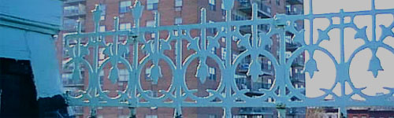
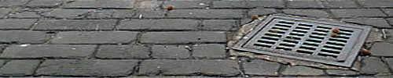
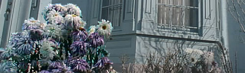
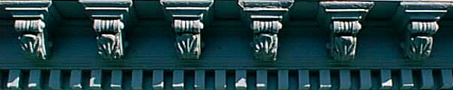

|
|
It is an old house,
Suffering hungry nibbles
Of termite and mouse.
Its three layers and
Canopy form a giant
Wedding cake on land.
Two weddings have I
Seen in that house, one would live
The other would die. |
|
|
|
|
A music school,
The house sings hymns,
Hummed melodies
May be heard from within,The eyes of its windows
Open and shut
From time to time,
Allowing air
To the pupils inside,
Eyelids draw back in morning,
Close to sleep at night,
Grey complexion,
Peeling from neglect,
Dark red brick sideburns,
Brownstone base and windows,
Define the jaw and its features,
Bulging cheeks of bay windows
Hang on either side of its
Crooked mouth of the door,
The house speaks sideways.
Beneath its jowls a beard
Sprouts in Springtime,
Hedges and grass,
Shaved slowly in the fall,
Winters shaving cream
Soft, white, wet and cool,
To sooth sore faces, falls.
Badly rusted iron railing
Surrounds the third floor canopy,
Hair parted where
Shingles have fallen,
On top of which, alone sits
A round tower, its crown.
13 windows encircle the tower,
No shade in any direction,
A "Widow's-Walk' doorway facing the Hudson,
One view demands attention: |
|
|
|  |
|
Across the street
An orange building with 16 floors
Looms and stares down menacingly
At the house,This tall product of modern science
Has no respect for it's elders. |
|
|
|  |
|
In two's, the house is permeated
With symmetry, deliberatedFramed by earth and sky,
A car's width of land on each
Side, dusty and dry,
Each path a passage
To cobblestoned history,
Wond'rous in it's age |
|
|
|  |
|
All of great Park Slope
Around the house, was land, once
A farmer's life's hope. |
|
|
|  |
|
The year he died,
Henry P. Rockworth
Built a Victorian style mansion
At the center of his property.
| There were three |
sections |
to the house |
|
| the main household |
and the left
For gardeners |
and right wings
and house servants. |
What remains today is the left wing.
Three flights of 15 foot ceilings,
A round tower on top,
What was once `servant's dwellings'
Is now considered large
For a one family house
In Brooklyn. |
|
|
|
|
Looking from the outside,
There is a yard in front of the house,
A black iron gate, at chest high
Cloaks the Crocus' blues,
The Hyacinths' pinks, the sounds
Of cat's claws scratching the slate path.Like Tongue bringing food to Mouth, the path
Leads me to a door. Outside
Birds and cars and people mix their sounds.
A door is opened, I enter the house,
Home, I shrug away the blues
Inside, feeling an increasing high,
Memories dash through my brain, like high
Rising waves at the end of their path
Crashing ecstatically, whites and blues
And greens rushing, reveling, totally outside
Myself, I stand inside the foyer of the house,
Listening anxiously for familiar sounds.
But I hear no sounds.
No creaking floorboards, no high
Pitched whistle as steam travels the house
Through hot pipes, No footsteps lead up the path,
As jazz patrons come from outside
To pay tribute to the singer and his blues.
What I miss most is the music, the blues
Of an older generation, not the harsh sounds
Of heavy metal or the Hip-hop you hear outside
Blasting away, content low, volume high,
How could I have known that the path
I traveled would lead me back to this beloved house?
To destroy this poor, abandoned, beloved house?
Still, it's pain that makes a blues
Singer sing, A bulldozer sits on a slate path,
It starts up, making heavy growling sounds,
I give the `ready' command, "Raise-High"
While a crewman yells, "Let's go, it's hot outside!"
It is hot outside, sweating in my 501 Blues,
Head high, I signal the 'dozer on the path,
Amidst the sounds, I say goodbye to my childhood House |
|
|
|
|
| A friend of mine, I live within. |
|
|